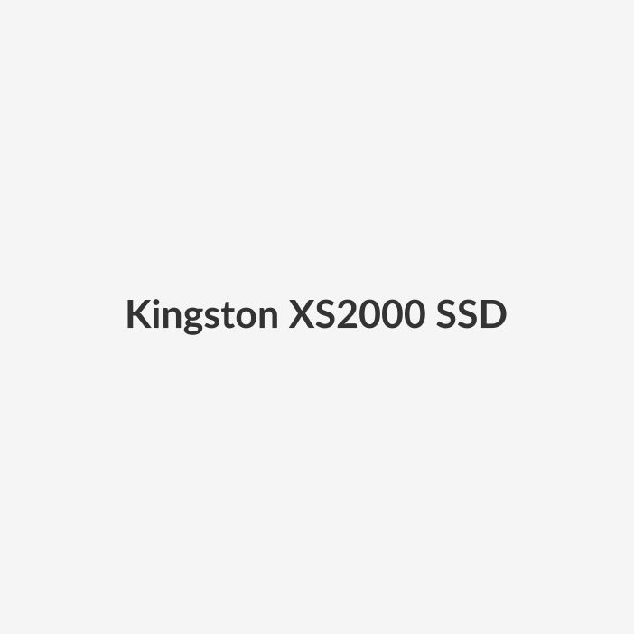

USB Type-A and Type-C speeds up to 1,000MB/s
Capacities: 512GB, 1TB, 2TB
Part Number: SXSD10
Camouflaged as a traditional thumb drive, Kingston's Dual Portable SSD brings stunning USB 3.2 Gen 2 performance to your USB Type-A and USB-C devices. This portable SSD takes "convenient" to a whole new level with a compact, durable metal design and both USB Type-A and Type-C connectors to easily transfer files between your laptops, desktop, mobile devices and more. Boost your productivity on-site with transfer speeds up to 1,000MB/s read and 950MB/s write.
All in one, and one for all, all your devices that is. With both USB Type-A and Type-C connectors, the Dual Portable SSD easily transfers files between your laptops, desktop, mobile devices and more.
Amplify your creative productivity with USB 3.2 Gen 2 speeds up to 1,000MB/s read and 950MB/s write.
Life is messy enough without the chaos of cable management. Keep it simple and go cable-free. Palm, pocket or purse, this compact and sleek SSD fits virtually anywhere.
Get reliable storage for your large files, high-resolution photos and 4K videos up to 2TB.
USB-C is a small, slim connector. Its symmetrical and reversible shape is what makes it popular.
Organizing Your Media Collection
Kingston provides advice on making your family media collection efficient and user-friendly.
On-the-Go Storage Solutions Built for Your Lifestyle
Improve your storage, file organization, and more with our external SSDs.